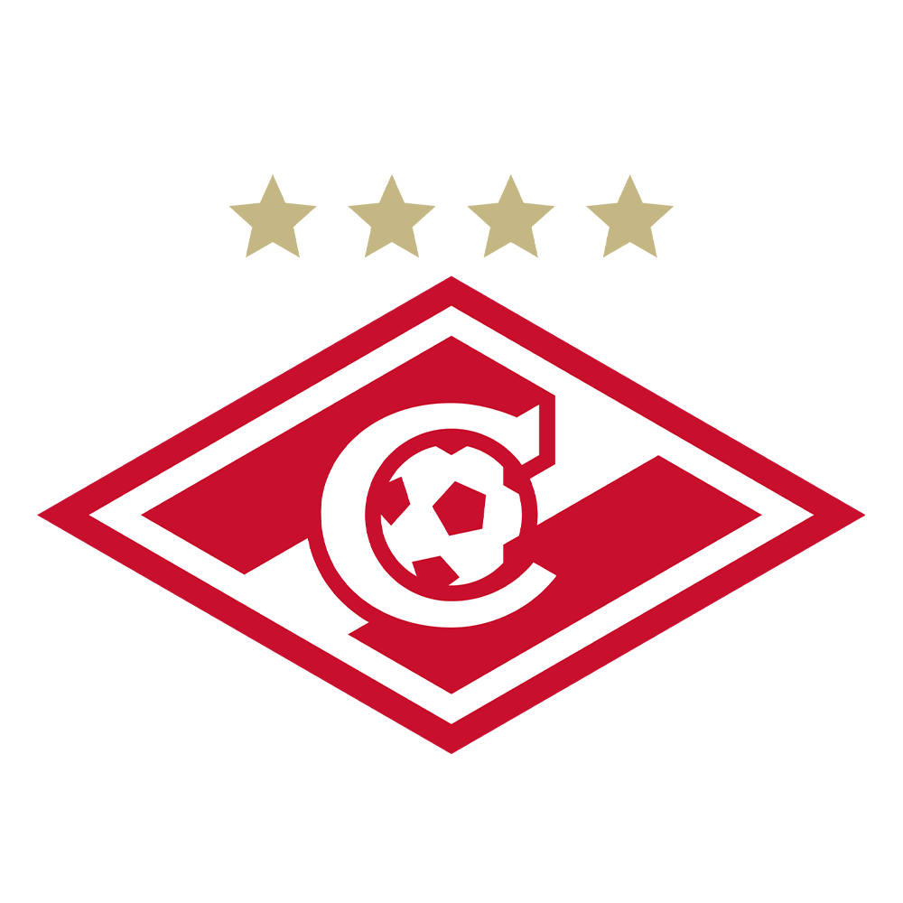
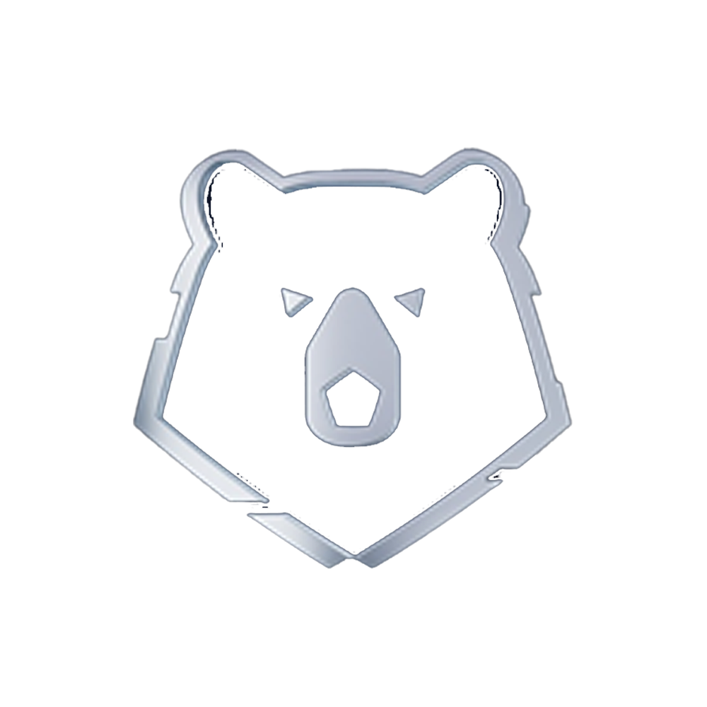

Начать игру
Моя коллекция
Открыть наборы
Получить очки
ВЫБЕРИТЕ КОМАНДУ


🔒
🔒
VS
ВЫБЕРИТЕ СОПЕРНИКА
🔒
🔒
ВЫБЕРИТЕ КОМАНДУ
🔒
🔒
ВАШ СОСТАВ
←
Таймер:
30
Замен: 0/3
Выберите карты
Начать матч
ВАША КОЛЛЕКЦИЯ (Спартак)
Назад
Тактика
Coach
Тактика
0
Тактика
⚙️
0
0:0
0
ПАС
Тактика
Тактика
0
Тактика
Coach
ПОБЕДА СПАРТАКА!
Счет: 0 - 0
Сыграть еще
ТЕКУЩИЙ
0
➜
ПОТЕНЦИАЛ
0
НАЗАД
Выбор не сделан
АДМИНРЕСУРС
Вы решаете, кто ходит первым
Я НАЧНУ
СОПЕРНИК